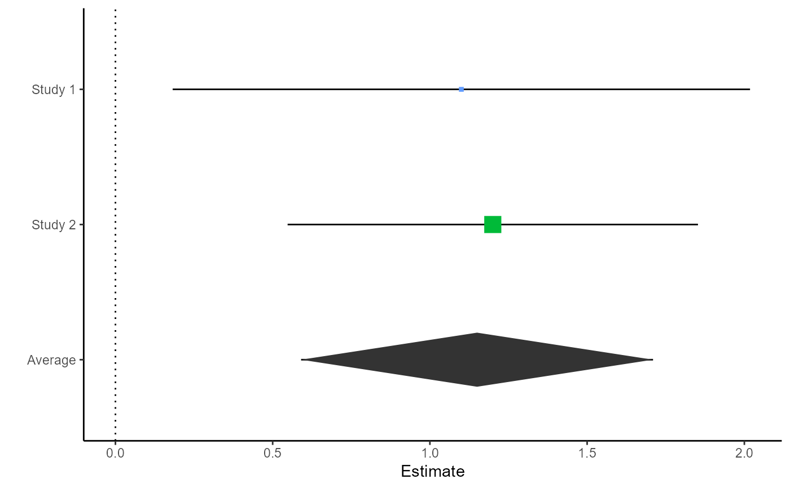
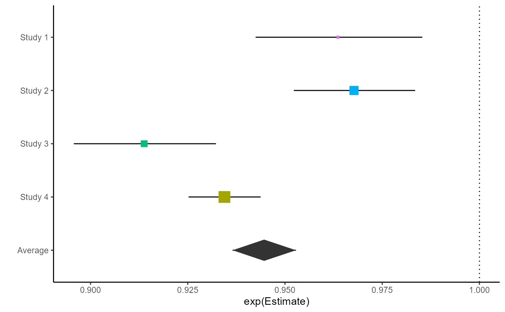
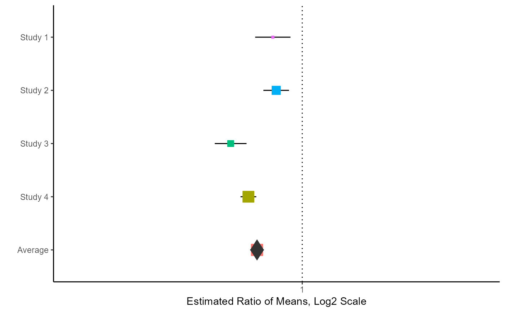

Generates a forest plot to visualize effect sizes estimates and overall averages from the meta.ave functions in vcmeta. If the column exp(Estimate) is present, this function plots the exponentiated effect size and CI found in columns exp(Estimate), exp(LL), and exp(UL). Otherwise, this function plots the effect size and CI found in the columns Estimate, LL, and UL.
Usage
meta.ave.plot(
result,
reference_line = NULL,
diamond_height = 0.2,
ggtheme = ggplot2::theme_classic()
)Arguments
- result
a result matrix from any of the replicate functions in vcmeta
- reference_line
Optional x-value for a reference line. Only applies if focus is 'Difference' or 'Both'. Defaults to NULL, in which case a reference line is not drawn.
- diamond_height
Optional height of the diamond representing average effect size. Only applies if focus is 'Average' or 'Both'. Defaults to 0.2
- ggtheme
optional ggplot2 theme object; defaults to theme_classic()
Examples
# Plot results from meta.ave.mean2
m1 <- c(7.4, 6.9)
m2 <- c(6.3, 5.7)
sd1 <- c(1.72, 1.53)
sd2 <- c(2.35, 2.04)
n1 <- c(40, 60)
n2 <- c(40, 60)
result <- meta.ave.mean2(.05, m1, m2, sd1, sd2, n1, n2, bystudy = TRUE)
meta.ave.plot(result, reference_line = 0)

# Plot results from meta.ave.meanratio2
# Note that this plots the exponentiated effect size and CI
m1 <- c(53, 60, 53, 57)
m2 <- c(55, 62, 58, 61)
sd1 <- c(4.1, 4.2, 4.5, 4.0)
sd2 <- c(4.2, 4.7, 4.9, 4.8)
cor <- c(.7, .7, .8, .85)
n <- c(30, 50, 30, 70)
result <- meta.ave.meanratio.ps(.05, m1, m2, sd1, sd2, cor, n, bystudy = TRUE)
myplot <- meta.ave.plot(result, reference_line = 1)
myplot

# Change x-scale to log2
library(ggplot2)
#> Warning: package 'ggplot2' was built under R version 4.4.3
myplot <- myplot + scale_x_continuous(
trans = 'log2',
limits = c(0.75, 1.25),
name = "Estimated Ratio of Means, Log2 Scale"
)
myplot
